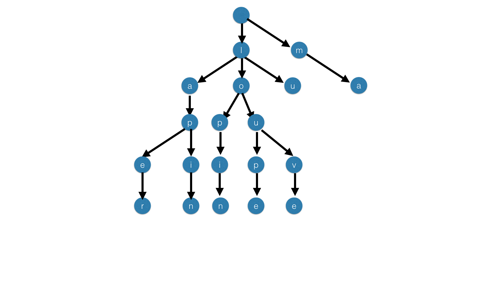
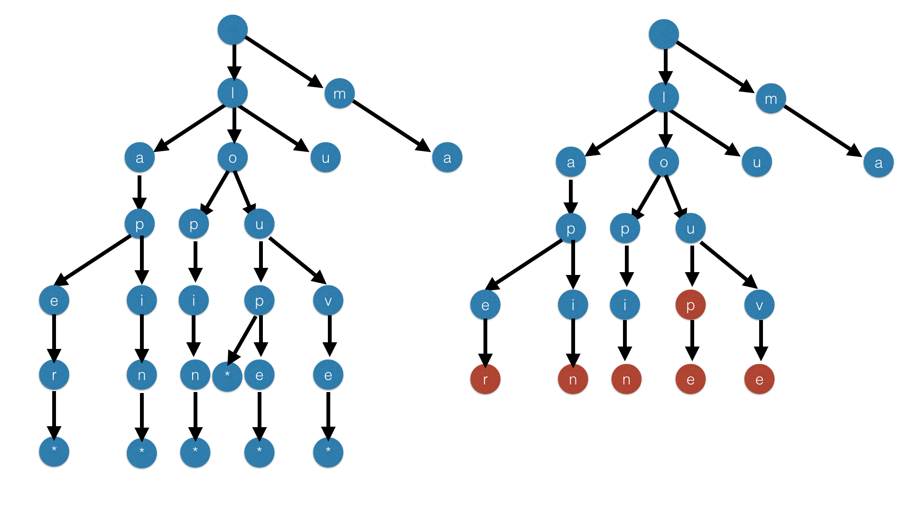
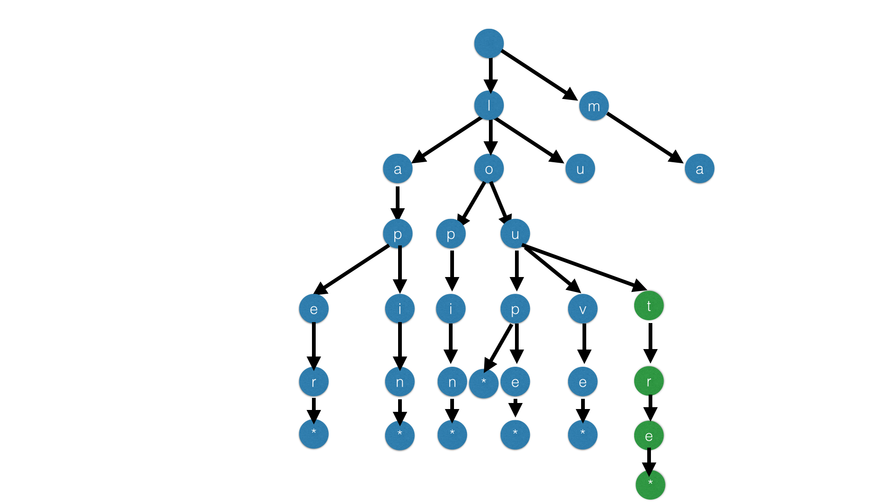

Recherche de mots dans une grille: Instructions
Présentation du devoir
Cet exercice est le premier pas vers la résolution du jeu donné en vidéo d'introduction du cours. Pour mémoire, il s'agissait de trouver le plus grand nombre possible de mots dans une grille de lettres, en se déplaçant horizontalement, verticalement ou en diagonale.
Cette semaine, nous implémentons la structure de données nécessaire pour représenter un dictionnaire efficacement : un arbre préfixe. La semaine prochaine, nous reprendrons ce sujet et utiliserons les arbres préfixes que vous avez codés pour trouver les mots dans une grille. Il est donc essentiel de terminer ce sujet pour pouvoir faire le suivant.
Rappels de Java
Nous rappelons que pour itérer sur une structure de données en java, on peut utiliser la syntaxe suivante :
LinkedList<T> l = ...;
for (T x: l) {
// faire quelque chose avec x
}Nous rappelons également deux instructions de contrôle de boucle : dans le corps d'une boucle, l'instruction continue permet de passer directement à l'itération suivante d'une boucle sans exécuter le reste du corps de la boucle ; l'instruction break permet de terminer la boucle prématurément.
Principe des arbres préfixes
Dans cet exercice nous nous proposons de coder un dictionnaire, c'est à dire une structure de données efficace permettant de stocker un ensemble de mots. Le dictionnaire nous permettra de déterminer si une suite de lettres est préfixe ou non d'un mot de cet ensemble. Réaliser cette opération de manière efficace est crucial pour trouver les solutions du jeu posé en introduction.
Prenons comme exemple les mots suivants :
lapinlaperlupinlopinlouvelouploupema
Il nous faudra coder une structure permettant de stocker ces mots et de répondre à une question du type :
- Le mot
loupappartient-il à cet ensemble ? - Existe-t-il des mots commençant par
lapet si oui, quelles sont les lettres possibles suivant lep?
Pour réaliser ces opérations nous utiliserons un codage par arbres n-aires.
Bien entendu, nous aurions pu stocker nos mots dans un tableau trié. Cette solution pose néanmoins deux problèmes : d'une part ce stockage nécessiterait beaucoup de place, et d'autre part l'ajout d'un élément dans le dictionnaire serait linéaire.
Le principe de codage par un arbre n-aire est très simple. Sur notre exemple précédent nous pouvons représenter notre ensemble de mots par l'arbre suivant :
Gestion de la fin de mot
Le problème du codage précédent est qu'il est difficile de distinguer les mots. Par exemple, comment savoir que le mot loup est bien un mot de mon ensemble ? Pour corriger ce défaut, nous pouvons ou bien utiliser un marqueur de fin de mot noté *, ou bien créer deux types de nœuds dans l'arbre : le premier servirait à représenter les lettres en milieu de mot, tandis que le second représenterait la fin d'un mot.
Voici les deux exemples mis côte à côte. Notez que dans nos arbres, un nœud n'a qu'un seul fils étiqueté par la même lettre.
Écriture de la classe Noeud
Nous vous proposons ici de coder les arbres en utilisant le marqueur *.
Les classes Noeud et Dictionnaire sont écrites dans le fichier Dictionnaire.java.
Complétez la classe Noeud et plus spécifiquement son constructeur Noeud(char c). Notez en effet que chaque sommet contient un caractère. Par défaut le nœud créé n'aura pas d'enfants. Munissez votre classe d'une méthode public void ajouteFils(Noeud a) qui ajoute un fils au nœud courant. Voici un petit exemple d'utilisation de votre classe:
Noeud a1 = new Noeud('*');
Noeud a2 = new Noeud('*');
Noeud a3 = new Noeud('*');
Noeud b = new Noeud('l');
Noeud c = new Noeud('e');
Noeud d = new Noeud('a');
Noeud e = new Noeud('s');
b.ajouteFils(c);
b.ajouteFils(d);
c.ajouteFils(e);
c.ajouteFils(a1);
d.ajouteFils(a2);
e.ajouteFils(a3);Remarquez que le code précédent construit l'ensemble de mots le, la, les.
Quelle est la structure de données adaptée pour représenter la liste des enfants d'un nœud ?
Pour vous assurer que vos nœuds sont bien implémentés, vous pouvez ajouter une méthode d'affichage des nœuds. Implémentez public String toString(), de manière à ce que vous puissiez rajouter, à la fin de l'exemple ci-dessus:
System.out.println(b);Avec, par exemple, une sortie du type :
l(e(s(*), *), a(*))Ce code n'est pas noté, mais vous permet de vérifier que votre structure a bien le comportement attendu. Vous en aurez certainement besoin pour trouver des erreurs dans vos programmes ensuite.
Gestion d'un ensemble de mots : le dictionnaire
Cette classe nœud créée, nous allons maintenant nous intéresser à la classe Dictionnaire située dans le même fichier Dictionnaire.java. Cette classe va simplement représenter un dictionnaire.
Dans nos illustrations, vous remarquerez que nous avons laissé un nœud racine, qui ne contient aucun caractère, et qui permet simplement de commencer à parcourir l'arbre. Ainsi, un dictionnaire vide sera constitué d'un arbre réduit à un nœud. Nous pourrons par exemple mettre le caractère _ (underscore) dans ce nœud. Écrivez la classe Dictionnaire ainsi que son constructeur. Cette classe se contentera de maintenir une référence vers le nœud racine de l'arbre.
Existence d'un mot
Nous voulons maintenant vérifier la présence d'un mot m dans le dictionnaire. Pour cela, nous partons d'un arbre et l'idée est de lire le mot m lettre par lettre et de descendre dans l'arbre si la lettre suivante est un fils du nœud courant. Sur l'arbre dessiné au début du sujet, si l'on regarde le mot lapa alors on regarde le l et on voit que la racine a un fils étiqueté par l. Nous descendons donc dans ce nœud. Puis nous regardons la lettre a et nous descendons donc dans le fils étiqueté par a puis de même pour p. Arrivé à cette lettre le nœud de l'arbre n'a pas de fils étiqueté par a aussi pouvons donc décider que ce mot n'est pas dans l'ensemble. Attention, même si vous pouvez lire tout le mot, ce n'est pas pour cela qu'il est dans le dictionnaire. En effet, si vous lisez pas exemple le mot lo dans votre arbre vous pouvez effectivement lire toutes les lettres mais ce n'est pas pour autant un mot du dictionnaire. Il vous faut aussi vérifier que le nœud d'arrivée a bien un fils étiqueté par *.
Écrivez la fonction public boolean existeMot(String s) dans la classe Dictionnaire.
Une méthode est de programmer une fonction récursive dans la classe nœud appelée public boolean existeMotRecursif(String s, int pos) qui verifie si le nœud courant a bien un fils contenant le caractère s.charAt(pos). Dans ce cas on essaye de lire la suite du mot à partir de ce caractère. Sinon le mot n'est pas présent. Attention de gérer le cas final (pos égal à s.length())
Activez la fonction test1 et soumettez les résultats de la première partie.
Remplissage du dictionnaire
Nous allons maintenant construire le dictionnaire à partir des mots. Pour cela nous allons écrire la fonction public boolean ajouteMot(String s) dans la classe dictionnaire. Cette méthode va être similaire à la fonction estPrefixe à savoir que l'on va descendre dans l'arbre tant que l'on peut lire le début du mot, puis lorsque qu'une lettre ne marche pas, on va construire le bout de l'arbre manquant. Par exemple, reprenons l'arbre du début de l'énoncé et imaginons que nous cherchons à rajouter le mot loutre. Nous allons donc lire successivement le début du mot à savoir lou. Arrivé à la lettre u, on s'aperçoit que la lettre suivante t n'est pas dans l'arbre. Nous sommes donc dans la position suivante.
Arrivés à cette position, nous allons rajouter le bout d'arbre manquant et nous obtenons le nouvel arbre suivant.
Programmez la fonction ajouteMot. Votre fonction devra renvoyer true si le mot a bien été ajouté et false si le mot était déjà présent dans le dictionnaire.
Activez la fonction test2 et soumettez les résultats de la deuxième partie.
Test de préfixe
Écrivez de même la fonction public boolean estPrefixe(String s) qui vérifie si le mot s est préfixe d'un mot du dictionnaire. Nous rappelons qu'être préfixe veut dire être le début d'un mot du dictionnaire.
Activez la fonction test3 et soumettez les résultats de la troisième partie.
Énumération des mots du dictionnaire
Il s'agit maintenant d'énumérer les mots du dictionnaire, dans l'ordre alphabétique. En effet, on peut remarquer qu'en réalisant un parcours de l'arbre, on peut énumérer les mots de celui-ci.
L'objet de cette partie est d'écrire une méthode public void listeMotsAlphabetique() dans la classe Dictionnaire qui affiche les mots contenus dans le dictionnaire et ce par ordre alphabétique (ordre du dictionnaire, ou ordre lexicographique). Les mots doivent être séparés par des espaces.
Cette question pose en réalité plusieurs difficultés techniques.
Ordre alphabétique
La première est que nous n'avons pas parlé d'ordre jusqu'ici. En effet, rien ne garantit que vos listes internes de nœuds sont dans l'ordre alphabétique. Nous allons modifier votre code de manière à garantir l'invariant que les listes de nœuds sont toujours dans l'ordre alphabétique.
Reprenez votre méthode ajouteMot. Si vous avez utilisé l'approche la plus simple, vous avez certainement une LinkedList<Noeud> qui maintient la liste des enfants du nœud. La manière la plus naturelle d'ajouter un enfant était de faire appel à la méthode add(Noeud n) de la classe LinkedList.
Modifiez le code de ajouteMot pour garantir que l'ajout d'un Noeud dans la liste des enfants le positionne immédiatement à la bonne position. Pour ce faire, abandonnez l'usage de add(Noeud n) et utilisez add(int index, Noeud n), qui vous permet d'insérer directement le Noeud n à l'index voulu.
Nous rappelons que la documentation de LinkedList est disponible en ligne.
Il est facile de se tromper dans l'écriture de cette méthode :
- l'ordre demandé est l'ordre du dictionnaire, ou ordre lexicographique : le mot
boutvient avant le motbouteille, par exemple ; - pensez aux cas limites : cas où le mot doit arriver en premier dans la liste, cas où le mot doit arriver en dernier ;
- testez de tête le code sur des listes de taille 0, 1, ou 2.
La fonction d'affichage des nœuds que nous vous conseillions d'écrire un peu plus tôt sera certainement utile pour vous assurer que votre code fonctionne correctement.
Pile de caractères
La seconde difficulté technique consiste à garder la liste des caractères déjà vus précédemment afin, lorsqu'on rencontre un *, de pouvoir immédiatement afficher le mot.
Plusieurs solutions s'offrent à vous. Nous vous proposons de garder une liste chaînée des caractères déjà vus jusque là, de manière à pouvoir, lorsque vous rencontrez un *, immédiatement accéder à la liste des caractères qui vous ont menés jusqu'à cette *.
Écrivez une méthode public void listeMotsAlphabetique(LinkedList<Character> prefix) { sur la classe Noeud. Cette méthode prend la liste des caractères rencontrés sur le chemin menant au Noeud courant, appelée prefix. Le Dictionnaire appellera cette méthode en lui passant une liste vide. Avant d'effectuer un appel récursif pour descendre dans ses enfants, cette méthode devra étendre la liste avec le caractère courant.
Cette méthode vous demandera un petit peu de travail annexe. Nous vous demandons d'écrire une routine de conversion d'une LinkedList<Character> en String, à l'aide d'un StringBuilder. Cette dernière classe est assez fréquemment utilisée en Java, et la documentation est disponible en ligne. Ainsi, vous pourrez facilement afficher vos préfixes.
L'autre difficulté consiste à gérer le fait que la LinkedList est une liste impérative. En effet, si votre fonction listeMotsAlphabetique se comporte, de manière schématique, de la façon suivante :
public void listMotsAlphabetique(LinkedList<Character> prefix) {
...
prefix.addLast(this.lettre);
for (Noeud n: this.enfants) {
n.listeMotsAlphabetique(prefix);
}
}alors vous allez rencontrer des problèmes. En effet, la LinkedList est une structure de données impérativee. Lors que vous appelez addLast, la liste est modifiée, et c'est cette même liste modifiée que l'appelant manipulera une fois l'appel récursif terminé. Si vous oubliez de remettre la liste prefix dans l'état où vous l'avez trouvée, l'appelant se retrouvera avec une liste « polluée » qui contient encore this.lettre.
Il est donc important de restaurer (backtracking) la liste prefix avant de sortir de listeMotsAlphabetique. En clair : la méthode listeMotsAlphabetique doit laisser, une fois terminée, le prefix dans l'état où elle l'a trouvé.
Activez la fonction test4 et soumettez les résultats de la quatrième partie.